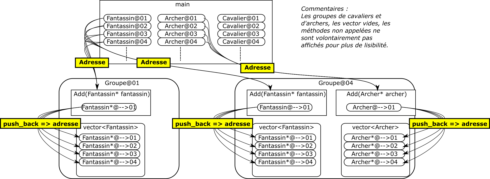

Dans la partie 1, on a vu la notion de pointeur et plus spécifiquement :
De manière globale, on a vu que l'un des intérêts du pointeur est de pouvoir manipuler des objets de grande taille à travers des fonctions sans devoir les copier. Il existe d'autres intérêts aux pointeurs dont un que l'on va voir aujourd'hui et qui est la conséquence directe de la fiche précédente : Partager une même ressource (objet, type générique) entre plusieurs objets.
Pour comprendre le concept, imaginons que l'on veuille programmer un jeu vidéo de stratégie un peu à la façon "Age of Empires". Dans ce jeu, on a trois classes qui représentent les types d'unité suivants :
CavalierFantassinArcherCes unités pourront se déplacer, attaquer, se défendre, etc... Ici il n'y a pas besoin de détailler les méthodes, voici seulement les classes.
xxxxxxxxxxclass Fantassin{ // Methodes pour appliquer des actions à l'unité // - Se deplacer // - Attaquer // ...};class Archer{ // Methodes pour appliquer des actions à l'unité // - Se deplacer // - Attaquer // ...};class Cavalier{ // Methodes pour appliquer des actions à l'unité // - Se deplacer // - Attaquer // ...};
Dans ce jeu de stratégie, le joueur peut sélectionner à la souris plusieurs unités qu'il souhaite contrôler. Il ne peut sélectionner qu'un seul groupe d'unités à la fois tout type confondu. Un objet Groupe peut donc être représenté par une classe contenant un nombre d'unités variable. Il faut également des méthodes pour ajouter des unités au groupe. En plus de pouvoir former un groupe d'unités en sélectionnant plusieurs unités à la souris, le joueur peut décider de garder en mémoire le groupe d'unités sélectionné en l'affectant à une touche du clavier afin de resélectionner ce même groupe plus tard rapidement. Voici le code qu'on pourrait proposer dans un premier temps (ce code va évoluer dans cette fiche).
xxxxxxxxxxclass Groupe{ std::vector<Fantassin> _fantassins; std::vector<Archer> _archers; std::vector<Cavalier> _cavaliers; char _touche; public: Groupe(char touche) { _touche = touche; } void add(Fantassin fantassin) { _fantassins.push_back(fantassin); } void add(Cavalier cavalier) { _cavaliers.push_back(cavalier); } void add(Archer archer) { _archers.push_back(archer); } // Methodes pour appliquer des actions à toutes les unités du groupe // - Se deplacer // - Attaquer // ...};Petit exemple de scénario : Le jouer souhaite ce préparer pour une bataille contre l'ennemi et il souhaite définir à l'avance ces groupes d'unité pour être bien préparé. Il sélectionne dans un premier temps ses 10 fantassins et forme un groupe attaché à la touche du clavier '1', ensuite il forme un second groupe contenant 5 cavaliers attaché à la touche du clavier '2', un troisième groupe contenant 10 archers attaché à la touche du clavier '3' et enfin un 4ème groupe composé de ses archers et fantassins attaché à la touche '4'. Lors de la bataille il pourra donc rapidement sélectionner ses archers pour attaquer de loin les troupes ennemis. Ensuite il sélectionnera son groupe de cavaliers pour charger sur les ennemis qui arrivent. Lorsque l'ennemi contre attaquera il pourra rapidement sélectionner son groupe de fantassins et les positionner devant son groupe d'archers pour les protéger. Si jamais la bataille part en peau de banane, le joueur sélectionnera son groupe '4' pour sonner la retraite avec ses archers et fantassins (les cavaliers auront déjà chargés, paix à leur âme).
Essayons d'écrire ce scénarion dans la fonction main.
xxxxxxxxxxint main(){ // Création des unités de cavalerie int nbCavaliers = 5; std::vector<Cavalier> cavaliers; for(int i = 0; i < nbCavaliers; i++) { cavaliers.push_back(Cavalier()); } // Création des unités fantassin int nbFantassins = 10; std::vector<Fantassin> fantassins; for(int i = 0; i < nbFantassins; i++) { fantassins.push_back(Fantassin()); } // Création des unités archer int nbArchers = 10; std::vector<Archer> archers; for(int i = 0; i < nbArchers; i++) { archers.push_back(Archer()); } // Création du groupe de fantassins Groupe groupeFantassins('1'); for(int i = 0; i < fantassins.size(); i++) { groupeFantassins.add(fantassins[i]); } // Création du groupe de cavaliers Groupe groupeCavaliers('2'); for(int i = 0; i < cavaliers.size(); i++) { groupeCavaliers.add(cavaliers[i]); } // Création du groupe d'archers Groupe groupeArchers('3'); for(int i = 0; i < archers.size(); i++) { groupeArchers.add(archers[i]); } // Création du groupe de retraite Groupe groupeRetraite('4'); for(int i = 0; i < archers.size(); i++) { groupeRetraite.add(archers[i]); } for(int i = 0; i < fantassins.size(); i++) { groupeRetraite.add(fantassins[i]); } // Bataille // Les archers attaquent de loin groupeArchers.attaquer(); // Les cavaliers chargent groupeCavaliers.attaquer(); // Les fantassins défendent les archers contre l'attaque de l'ennemi groupeFantassins.defendre(groupeArchers); // Nos unités se font submergées, retraite!!! groupeRetraite.détaler();}
Ce code semble faire ce qu'on veut, mais justement il ne va pas le faire correctement. Si on analyse bien le code il ya différents problèmes, je te laisse les trouver. Indice : les méthodes groupeArchers.attaquer(), groupeCavaliers.attaquer(), groupeFantassins.defendre(groupeArchers) et groupeRetraite.detaler() vont créer un comportement qui n'est pas attendu. Réponse dans le prochaine paragraphe :)
Quel est le problème alors? Si tu te rappelles de la fiche sur la partie 1, une méthode qui prend en entrée un paramètre de type class ou générique réalise toujours une copie de la valeur envoyée à cette méthode.
xxxxxxxxxxvoid foo(A aCopy) // copie de l'objet a dans aCopy{ }int main(){ A a; foo(a)}
Les méthodes add de la classe Groupe prennent en paramètre d'entrée un objet de type Archer, Cavalier ou Fantassins, ce qui signifie qu'une copie a lieu à chaque appel de ces méthodes. Ce qui a pour conséquence que les unités créées dans la fonction main ne sont pas les même unités traitées dans les méthodes add. Pire encore! Une seconde copie est réalisée de la copie de l'unité dans la méthode add lors de l'appel de la méthode push_back de vector. Ce qui signifie que deux copies sont réalisées entre la fonction main et l'ajout des unités dans les vector de chaque Groupe. Exemple de bug : les fantassins du groupe '1' et dans le groupe '4' sont censés être les même objets mais ne le sont pas en réalité. Si le joueur souhaite déplacer ses fantassins du groupe '2' et qu'il souhaite ensuite déplacer ses archers et fantassins du groupe '4', et bien çà ne fonctionnera pas puisque ce seront des copies d'unité qui seront déplacées...
Voici un récapitulatif avec un dessin pour mieux voir l'ensemble.
La question qui se pose est évidemment comment éviter cela!
_include(guy_speaking,content={Et la réponse est, je suis sûr, les pointeurs ? c'est çà :D ? })
En effet! Il faut faire en sorte de pouvoir créer des unités qu'à un seul endroit de la mémoire et partager ces même unités entre les différents objets Groupe sans faire de copie à droite et à gauche.
On veut utiliser des pointeurs pour partager une unité entre les différents objets Groupe. Il nous faudrait alors imaginer quelque chose comme çà:
Dans le dessin, on voit bien que les objets Groupe contiennent non plus des objets de type Fantassin, Archer ou Cavalier mais vont pointer vers ces objets. De cette manière, on peut donc accéder aux unités originales directement et aucune copie n'est réalisée. Dans le code, çà se traduit par :
xxxxxxxxxxclass Groupe{ std::vector<Fantassin*> _fantassins; std::vector<Archer*> _archers; std::vector<Cavalier*> _cavaliers; char _touche; // [...]};add si on change les vector d'objets par des vector de pointeurs sur objet?})
Oui et ce code n'est pas suffisant si on veut aller au bout de l'idée. Si on regarde bien les méthodes add, on voit qu'elles prennent en entrée des objets de type Fantassin, Archer ou Cavalier, mais ces objets ne seront que des copies de ceux envoyés par la fonction main et ce n'est pas çà que l'on veut. Ce que l'on veut ce sont les unités originales, il faut donc également utiliser des pointeurs en entrée de ces méthodes afin d'avoir accès aux unités originales!
Allez, on continue la modification du code.
xxxxxxxxxxclass Groupe{ std::vector<Fantassin*> _fantassins; std::vector<Archer*> _archers; std::vector<Cavalier*> _cavaliers; char _touche; public: Groupe(char touche) { _touche = touche; } void add(Fantassin* pFantassin) { _fantassins.push_back(pFantassin); } void add(Cavalier* pCavalier) { _cavaliers.push_back(pCavalier); } void add(Archer* pArcher) { _archers.push_back(pArcher); }};push_back des vector?})
Et bien, on vient justement de régler le problème en modifiant les signatures des méthodes add. Petit recap :
vector _fantassins, _archers et _cavaliers peuvent contenir respectivement des pointeurs vers des objets de type Fantassin, Archer et Cavalieradd prennent en entrée des pointeurs sur des objets de type Fantassin, Archer et Cavalieradd stockent l'adresse des unités dans la fonction main, ces adresses sont directement copiées dans les vector de pointeurs respectifs.Exemple :
xxxxxxxxxxclass Groupe{ std::vector<Cavalier> _cavaliers; // ... void add(Cavalier* pCavalier) // copie de l'adresse @cavalier dans le pointeur pCavalier { _cavaliers.push_back(pCavalier); // ajout (copie) de l'adresse @cavalier à la fin du vecteur de pointeurs _cavaliers[0]; // pointeur sur @cavalier _cavalier[0]->attaquer(); // accès à l'objet stocké dans @cavalier et appel de la méthode attaquer }}int main(){ Cavalier cavalier; // adresse : @cavalier Groupe groupe('1'); groupe.add(&cavalier); // Envoi de l'adresse de cavalier -> @cavalier}
Il ne reste plus qu'à modifier la fonction main pour que le code compile et le tour est joué.
xxxxxxxxxxint main(){ // Création des unités de cavalerie int nbCavaliers = 5; std::vector<Cavalier> cavaliers; for(int i = 0; i < nbCavaliers; i++) { Cavalier cavalier; cavaliers.push_back(cavalier); } // Création des unité fantassin int nbFantassins = 10; std::vector<Fantassin> fantassins; for(int i = 0; i < nbFantassins; i++) { Fantassin fantassin; fantassins.push_back(fantassin); } // Création des unités archer int nbArchers = 10; std::vector<Archer> archers; for(int i = 0; i < nbArchers; i++) { Archer archer; archers.push_back(archer); } // Création des groupes d'unité Groupe groupeFantassins('1'); for(int i = 0; i < fantassins.size(); i++) { // Envoi de l'adresse de chaque fantassin contenu dans fantassins groupeFantassins.add(&fantassins[i]); } Groupe groupeCavaliers('2'); for(int i = 0; i < cavaliers.size(); i++) { // Envoi de l'adresse de chaque cavalier contenu dans cavaliers groupeCavaliers.add(&cavaliers[i]); } Groupe groupeArchers('3'); for(int i = 0; i < archers.size(); i++) { // Envoi de l'adresse de chaque archer contenu dans archers groupeArchers.add(&archers[i]); } }Voici un schéma récapitulatif des modifs:

Lorsque le joueur commandera à son groupe d'unité de se déplacer à une autre position, il commandera chacune des unités du groupe via les pointeurs stockés dans les vector. Les unités sont donc des ressources partagées entre les différents objets Groupe.
Groupe via un pointeur sur cette unité.Archer se fait tuer, comment la fonction main et les Groupe doive gérer çà?